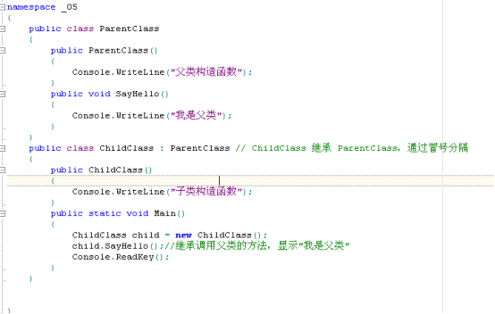
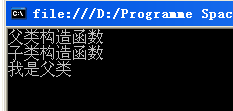
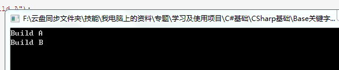
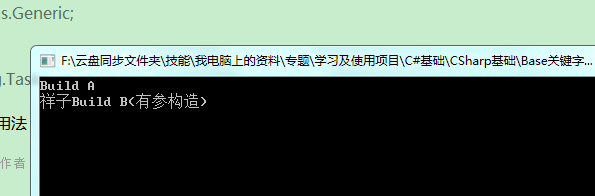

原文连接:https://www.cnblogs.com/schangxiang/p/11183074.html
1、背景
我：虽然通过继承减少了代码冗余，但是，每一个子类的构造函数还是需要给所有属性赋值的，很麻烦的。
师：这个好办，用base就行啦。
我：贝司？还吉他呢！
师：别急，首先我们先介绍下实例化子类对象的时候调用父类构造函数。

运行结果：

从上面代码分析可知：
（1）执行 ChildClass child=new ChildClass(); 会首先调用父类无参构造函数（这个构造函数一定是无参构造函数），然后再调用子类无参构造函数，所以会先显示
（2）然后再执行child.SayHello(); 因为子类是继承父类的，所以直接调用父类的SayHello()方法，所以显示
总结一下：
在实例化子类对象的时候，总是要调用父类的构造函数，并且总是调用无参构造函数【注意：除非是显示指定用base调用其他有参构造，其他情况都是默认调用无参构造，为什么要默认调用无参构造呢？因为子类需要用父类的一些数据，比如属性等，如果父类没有默认无参构造初始，那么调用会报错的，所以C#会默认调用父类的无参构造】。
如果父类没有无参构造函数，那么子类的构造函数就会报错
也就说说，子类是非常认死理的。必须去调用父类无参构造函数。这也是编程中容易出错的地方。父类没有编写无参构造函数，导致子类无法编译。
这时候解决错误有两种方法：
（1）直接手动编写父类无参构造函数
（2）在子类构造函数中使用base调用父类中的其他构造函数。Base后面括号中的实际参数需要与被调用的父类构造函数参数保持一致。
2、Base的用法
base其实最大的使用地方在面相对象开发的多态性上，base可以完成创建派生类实例时调用其基类构造函数或者调用基类上已被其他方法重写的方法。
Base有两个用途
（1）在派生类中调用基类构造函数
（2）在派生类中调用基类的方法
2.1关于base调用基类构造函数
public class A
{
public A()
{
Console.WriteLine("Build A");
}
}
public class B:A
{
public B():base()
{
Console.WriteLine("Build B");
}
static void Main()
{
B b = new B();
Console.ReadLine();
}
}
输出：

base调用基类有参构造和无参构造都可以的哦。
class B:A
{
public B():base()
{
Console.WriteLine("Build B");
}
public B(string name) : base()
{
Console.WriteLine(name + "Build B(有参构造)");
}
/*
public B(string name) : base(name)
{
Console.WriteLine(name + "Build B(有参构造)");
}
//*/
public override void Hello()
{
base.Hello();//调用基类的方法
Console.WriteLine("Hello,我是 B");
}
}
class A
{
public A()
{
Console.WriteLine("Build A");
}
public A(string name)
{
Console.WriteLine(name+"Build A(有参构造)");
}
public virtual void Hello()
{
Console.WriteLine("Hello,我是A");
}
}
static void Main(string[] args)
{
B b = new B("祥子");
Console.ReadLine();
}运行结果：

2.2关于base在派生类中调用基类的方法。
public class A
{
public virtual void Hello()
{
Console.WriteLine("Hello");
}
}
public class B : A
{
public override void Hello()
{
base.Hello();//调用基类的方法,显示Hello
Console.WriteLine("World");
}
}这样如果程序调用B.Hello()获得的效果将会使Hello World.